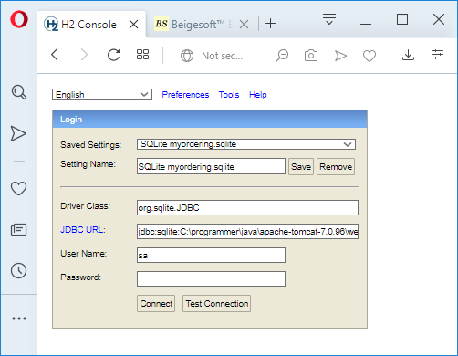
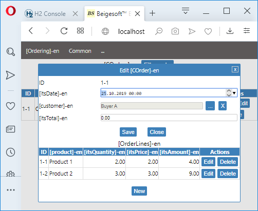

Creating WAR Maven project.
Create a project folder "myappweb", then create this pom.xml in it:
<?xml version="1.0"?>
<project xmlns="http://maven.apache.org/POM/4.0.0" xmlns:xsi="http://www.w3.org/2001/XMLSchema-instance" xsi:schemaLocation="http://maven.apache.org/POM/4.0.0 http://maven.apache.org/xsd/maven-4.0.0.xsd">
<modelVersion>4.0.0</modelVersion>
<groupId>org.myapp</groupId>
<version>1.0-SNAPSHOT</version>
<artifactId>ordering-web</artifactId>
<packaging>war</packaging>
<name>My ordering WEB-application.</name>
<inceptionYear>2019</inceptionYear>
<properties>
<project.build.sourceEncoding>UTF-8</project.build.sourceEncoding>
<java.version>1.7</java.version>
</properties>
<dependencies>
<dependency>
<groupId>org.myapp</groupId>
<artifactId>ordering</artifactId>
<version>1.0-SNAPSHOT</version>
</dependency>
<dependency>
<groupId>org.beigesoft</groupId>
<artifactId>beige-web-jar</artifactId>
<version>1.0</version>
<exclusions>
<exclusion>
<groupId>org.beigesoft</groupId>
<artifactId>beige-blc</artifactId>
</exclusion>
</exclusions>
</dependency>
<dependency>
<groupId>org.apache.taglibs</groupId>
<artifactId>taglibs-standard-spec</artifactId>
<version>1.2.5</version>
</dependency>
<dependency>
<groupId>org.apache.taglibs</groupId>
<artifactId>taglibs-standard-impl</artifactId>
<version>1.2.5</version>
</dependency>
<dependency>
<groupId>org.beigesoft</groupId>
<artifactId>beige-web</artifactId>
<version>1.0</version>
<type>war</type>
<scope>runtime</scope>
</dependency>
</dependencies>
<build>
<finalName>${project.artifactId}</finalName>
<resources>
<!--Apache Tomcat7 loads jars ordered by name, so beige-blc.jar
is loaded first. Placing ordered resources
to the WEB-INF/classes folder resolves this problem:-->
<resource>
<directory>..${file.separator}myapp${file.separator}src${file.separator}main${file.separator}resources</directory>
</resource>
</resources>
<plugins>
<plugin>
<groupId>org.apache.maven.plugins</groupId>
<artifactId>maven-install-plugin</artifactId>
<version>2.5.2</version>
</plugin>
<plugin>
<groupId>org.apache.maven.plugins</groupId>
<artifactId>maven-deploy-plugin</artifactId>
<version>2.8.2</version>
</plugin>
<plugin>
<groupId>org.apache.maven.plugins</groupId>
<artifactId>maven-resources-plugin</artifactId>
<version>2.7</version>
</plugin>
<plugin>
<groupId>org.apache.maven.plugins</groupId>
<artifactId>maven-surefire-plugin</artifactId>
<version>2.22.1</version>
<configuration>
<useSystemClassLoader>false</useSystemClassLoader>
<useFile>false</useFile>
<trimStackTrace>false</trimStackTrace>
</configuration>
</plugin>
<plugin>
<groupId>org.apache.maven.plugins</groupId>
<artifactId>maven-compiler-plugin</artifactId>
<version>3.1</version>
<configuration>
<source>${java.version}</source>
<target>${java.version}</target>
<compilerArgs>
<arg>-Xlint:all,-options,-path</arg>
</compilerArgs>
</configuration>
</plugin>
<plugin>
<artifactId>maven-war-plugin</artifactId>
<version>3.1.0</version>
<configuration>
<overlays>
<overlay />
<overlay>
<groupId>org.beigesoft</groupId>
<artifactId>beige-web</artifactId>
<excludes>
<exclude>META-INF${file.separator}BEIGESOF.RSA</exclude>
<exclude>META-INF${file.separator}BEIGESOF.SF</exclude>
</excludes>
</overlay>
</overlays>
</configuration>
</plugin>
</plugins>
</build>
</project>
* This is the WAR archive of this JEE WEB application. Both WAR and JAR files are actually ZIP archives.
Then create these folders for the source code:
myappweb - src - main - java - org - myapp - ordering
myappweb - src - main - webapp - WEB-INF - jsp
myappweb - src - main - webapp - META-INF
Adding the models into the menu.
Copy the dsk.jsp from beige-web project into "myappweb - src - main - webapp - WEB-INF - jsp", then add this drop-down menu with entities:
...
<div class="navbar">
<div class="dropdown">
<a href="#" class="dropdown-btn">${i18n.getMsg("Ordering", rvs.upf.lng.iid)}</a>
<div class="dropdown-content">
<a href="#" onclick="bsGtAjx('GET', 'srv?act=lst&rnd=lhj&ent=Customer&pg=1');">${i18n.getMsg("Customers", rvs.upf.lng.iid)}</a>
<a href="#" onclick="bsGtAjx('GET', 'srv?act=lst&rnd=lhj&ent=Merchandise&pg=1');">${i18n.getMsg("Merchandises", rvs.upf.lng.iid)}</a>
<a href="#" onclick="bsGtAjx('GET', 'srv?act=lst&rnd=lhj&ent=COrder&pg=1');">${i18n.getMsg("Orders", rvs.upf.lng.iid)}</a>
</div>
</div>
<div class="dropdown">
...
Then make the mbl.jsp in the same way.
web.xml
Copy the web-sqlite.xml from the beige-web project into the "myappweb - src - main - webapp - WEB-INF", then rename it into "web.xml" and change application factory class:
...
<context-param>
<param-name>fctAppCls</param-name>
<param-value>org.myapp.ordering.FctAppSqlt</param-value>
</context-param>
...
A
web.xml is the main file that describes about the JEE WEB-application.
Creating application factory for WAR version.
An application factory creates the all application's services (including inner factories) in the "lazy mode". For example, a service that prints a PDF report will be created when an user pushes a "Print order PDF" button.
Of course, factories for different platforms (OS) are different.
At this time just copy the file org.beigesoft.war.FctAppSqlt.java from the beige-web into the "myappweb - src - main - java - org - myapp - ordering",
then change its package.
JEE JDBC authentication.
* Browsers can refuse the JEE cookie "JSESSIONID" when it's used unencrypted HTTP connection (Chrome does this), and you will face "HTTP Status 408 – Request Timeout on http://localhost:8080/ordering-web/sec/j_security_check"!
So, you must either make HTTPS, or switch off JEE authentication in the "web.xml"! Any authentication is completely useless without an encrypted connection.
For Tomcat's standard, copy the context-sqlt.xml from the beige-web into the "myappweb - src - main - webapp - META-INF" rename it into "context.xml", then change the database URL in it:
...
connectionURL="jdbc:sqlite:../webapps/ordering-web/myordering.sqlite"
...
The first start.
Compile both projects by executing "mvn clean install" at the root folder of each project (where pom.xml is), first, at the myapp, then at the myappweb. The generated libraries ordering.jar and ordering-web.war will be in the target folders.
To start Tomcat run in its "bin" folder "startup.bat" on MS Windows, or "startup.sh" on Unix-like OS.
Copy the ordering-web.war file into Tomcat's "webapps" folder. The application will be deployed, it creates and fills SQLite database "ordering-web/myordering.sqlite"
You should have installed H2 database as described in the 3-d article. Just run its SQL tool "H2 console": in its "bin" folder run "h2.bat" on MS Windows or "sh h2.sh" on Unix like OS. The browser will open the WEB-interface of this tool,
select "Saved Settings"-"Generic SQLite" and type the database address in the "JDBC URL" field, e.g. "jdbc:sqlite:C:\programmer\java\apache-tomcat-7.0.96\webapps\ordering-web\myordering.sqlite", do not care about user and password:

then push "connect", H2 SQL console will show the tables, to insert users, just copy these entries and paste into the tool window, then push "Run":
insert into USTMC (USR, PWD, VER) values ('admin', 'admin', 1);
insert into USTMC (USR, PWD, VER) values ('user', 'user', 1);
insert into USRLTMC (USR, ROL, VER) values ('admin', 'admin', 1);
insert into USRLTMC (USR, ROL, VER) values ('user', 'user', 1);
* See at the bottom of the web.xml, there is the JEE authentication part about roles and secure paths.
After that you are able to login into "secure place" and make orders (user/password admin/admin), type in your browser "http://localhost:8080/ordering-web":

Lists, edit forms, entity pickers will be generated automatically.
* Here the browser allowed the "JSESSIONID" cookie for unencrypted HTTP connection. See Import an EIS database by using WEB-service, how to make HTTPS!
Internationalization
For internationalization use ${i18n.getMsg("COrder", rvs.upf.lng.iid)} in a JSP page.
You should add this message into Msgs_en_US.properties and non English e.g. Msgs_ru_RU-UTF8.properties.
Just copy these files from beige-blc/src/main/resources and edit them. After editing make ASCII encoded file for non-English messages, e.g.:
native2ascii -encoding UTF-8 Msgs_ru_RU-UTF8.properties Msgs_ru_RU.properties
Do not neglect Internationalization. Even some big WEB-stores have no advanced internationalization similar to Beigesoft WEB-store's one.